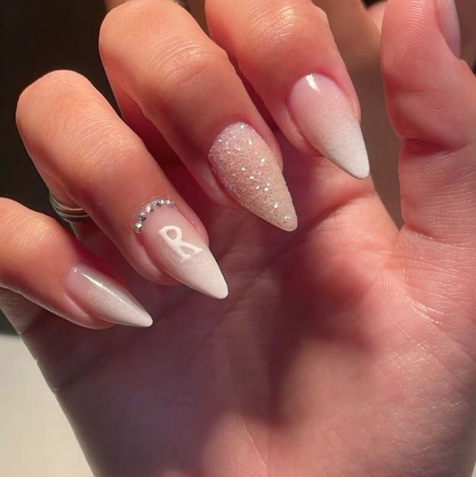

PROCEDIMENTOS
<


UNHA MOLDE F1
- Acabamento perfeito, natural e lixamento mínimo
- Manutenção em até 15 dias
UNHA MOLDE TIPS
- Ideal para unhas roídas ou muito curta
- Manutenção em até 15 dias

UNHA FIBRA DE VIDRO
- Técnica natural e resistente,alta durabilidade
- Manutenção em té 21 dias